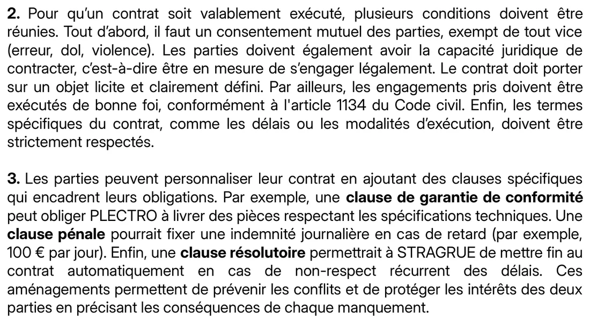
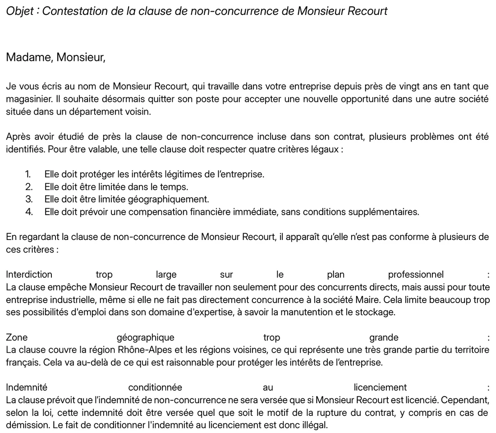

Pilotage et performance · BC2 · BUT 2
Niveau 2 : Collaborer au pilotage de l’organisation
Niveau attendu en deuxième année : intermédiaire. 5 apprentissages critiques, chacun avec ce qu’il recouvre, la situation où je l’ai travaillé et mes traces.
Apprentissages critiques du niveau 2
- AC22.01
Situer l’organisation dans son environnement international
Mesurer ce que l’international représente pour la structure : marchés à l’export, fournisseurs étrangers, concurrence mondiale, risques de change ou réglementaires.
Pour le challenge DCF, nous avons situé Ray-Ban Meta sur un marché mondial, celui des technologies immersives, estimé à 5,4 milliards de dollars en 2022 et attendu à 14 milliards en 2026, face à Google, Snap ou Apple. Notre PESTEL relève les risques venus de l’étranger : la dépendance à des fournisseurs chinois et américains en cas de tensions géopolitiques, les droits de douane et les accords commerciaux. Nous avons aussi pesé la place de Ray-Ban, environ 12 % du chiffre d’affaires d’EssilorLuxottica, et jugé les États-Unis et une partie de l’Europe plus propices au lancement, car plus avancés dans l’adoption des objets connectés. En stratégie d’entreprise, j’ai analysé le passage de Coca-Cola à une marque unique pour tous ses marchés et son entrée sur les hard seltzers, lancés en Amérique du Sud avant l’Europe, puis classé ses produits dans la matrice d’Ansoff.
Avec le recul, les chiffres de marché de notre dossier ne citent pas leurs sources, alors que la grille d’évaluation du DCF le demandait.
TracesDossier DCF, étude de marché et PESTEL (binôme)TD de stratégie d’entreprise : Coca-Cola (individuel)

PESTEL de Ray-Ban Meta, volet politique : aides publiques, tensions commerciales, droits de douane. - AC22.02
Analyser une situation juridique
Partir d’une situation concrète, un contrat, un litige ou une rupture, et dégager les règles de droit qui s’y appliquent.
En droit des affaires, le cas STRAGRUE m’a fait analyser seul un contrat de sous-traitance : PLECTRO livre en retard, pour la deuxième fois, des pièces que le contrat impose sous dix jours. J’ai qualifié le problème, un manquement contractuel qui retarde à son tour les livraisons de STRAGRUE, rappelé les conditions de validité et d’exécution d’un contrat, puis proposé les clauses qui protègent le donneur d’ordre : garantie de conformité, clause pénale, par exemple 100 € par jour de retard, clause résolutoire. J’ai enfin décrit le rôle du juge, qui peut modérer une clause disproportionnée, et la marche à suivre : mise en demeure, pénalités, puis résiliation. En droit du travail, j’ai qualifié une série de licenciements : justifiés ou non, pour faute légère ou pour faute grave.
Avec le recul, ma réponse fonde la bonne foi sur l’article 1134 du Code civil ; depuis la réforme du droit des contrats de 2016, c’est l’article 1104, et la force obligatoire du contrat relève de l’article 1103.
TracesCas STRAGRUE, janvier 2025 (individuel)TD de droit du travail sur les licenciements

Cas STRAGRUE : conditions d’exécution du contrat et clauses pour se protéger d’un sous-traitant en retard. - AC22.03
Restituer une situation juridique donnée et assimiler la solution judiciaire
Exposer clairement les faits, la question posée et la décision du juge, puis comprendre le raisonnement qui a mené à cette solution.
En droit du travail, nous avons rédigé à deux une lettre contestant la clause de non-concurrence d’un magasinier qui voulait quitter son entreprise après près de vingt ans. Nous avons restitué la situation, puis confronté la clause aux conditions de validité vues en TD : protéger un intérêt légitime de l’entreprise, être limitée dans le temps et dans l’espace, prévoir une contrepartie financière versée sans condition. La clause interdisait tout emploi dans l’industrie, même hors concurrence directe, couvrait Rhône-Alpes et les régions voisines, et ne prévoyait l’indemnité qu’en cas de licenciement, alors qu’elle est due quel que soit le mode de rupture, démission comprise. Nous avons aussi contesté une pénalité de 30 000 € par infraction et demandé la révision de la clause.
Avec le recul, la lettre présente ces conditions comme des « critères légaux » ; elles viennent de la jurisprudence de la Cour de cassation, qui les a réunies dans trois arrêts du 10 juillet 2002. Citer ces arrêts aurait renforcé la contestation.
TracesLettre de contestation d’une clause de non-concurrence (binôme)TD 3 sur la clause de non-concurrence

Lettre de contestation : la clause confrontée, point par point, aux conditions de validité. - AC22.04
Évaluer la situation financière de l’organisation
Lire un bilan et un compte de résultat, calculer les principaux ratios et dire si la structure est solide, rentable et solvable.
Cette année, je n’ai pas analysé de bilan complet. J’ai lu la situation financière de l’hôpital où j’ai fait mon stage à partir de ses chiffres : 380 millions d’euros de chiffre d’affaires pour l’HNFC, 393 millions pour le groupement hospitalier de territoire, et un déficit d’environ 4 millions d’euros pour l’établissement. Mon PESTEL en tire la conséquence, une tension budgétaire continue qui oblige à faire plus avec moins : c’est le cadre de mes missions d’achat, dans la ligne du programme national PHARE sur la performance des achats hospitaliers. Au National GACO Game, nous avons lu de la même façon CAP Alpes Provence, une association de 7 millions d’euros de chiffre d’affaires financée par ses séjours, des cotisations, des subventions et des emprunts.
Avec le recul, lire ces chiffres n’est pas les analyser : je n’ai calculé aucun ratio de rentabilité, de solvabilité ou d’endettement cette année, et c’est le point à reprendre.
TracesRapport de stage, présentation de l’établissement (non publié)Dossier National GACO Game, diagnostic (groupe)PDF
- AC22.05
Déterminer les coûts et la profitabilité pour le pilotage de l’organisation
Calculer le coût d’un produit, d’un service ou d’une activité, en déduire la marge et savoir ce qui est rentable et ce qui ne l’est pas.
En outils de pilotage, j’ai calculé des coûts complets par centres d’analyse sur plusieurs cas : répartir les charges indirectes entre les centres, choisir une unité d’œuvre pour chacun, puis remonter du coût d’achat au coût de production, au coût de revient et à la marge. Pour un lot de quinze maillots, le coût de revient ressort à 740 €, soit 49,33 € par maillot vendu 81 €, pour une marge de 475 € sur le lot. Pour une commande industrielle, j’ai conclu qu’elle pouvait être acceptée, son coût restant inférieur à 50 000 €. J’ai aussi séparé charges variables et charges fixes pour calculer marge sur coût variable, seuil de rentabilité et date du point mort. En stage, ce raisonnement a servi sur une dépense réelle, celle des gants, suivie en quantités, en prix unitaires et en coût total par service.
TracesTD de coûts complets, Excel (individuel)TD de seuil de rentabilité, Excel (individuel)

Coûts complets par centres d’analyse : unités d’œuvre, coût d’achat des matières et coût de production d’une commande.


Bilan du niveau 2
Points forts : calculer un coût complet et un seuil de rentabilité, analyser un contrat ou une clause, et transformer en stage une extraction de données en une analyse utile au pilotage budgétaire.
À renforcer : l’analyse financière, puisque je n’ai calculé aucun ratio de bilan cette année, et la mise à jour de mes références juridiques.
Pour la suite : au niveau 3, participer à l’amélioration du pilotage en suivant des indicateurs dans la durée, au service achats de l’HNFC où je poursuis en alternance.